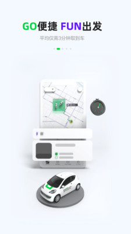
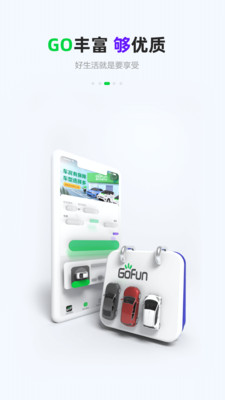

那天晚上我把 GoFun 蹭了一下，收到账单的时候人傻了
第一次用共享汽车就蹭了墙，原本以为买了不计免赔万事大吉，结果收到的账单让我重新学习了一遍共享汽车的全部费用规则。
墙是在地下车库转角蹭上的
说实话，那辆白色的车停的位置本身就挺阴的——地下 B2 层一个立柱后面，灯还坏了一半。我点了一键解锁，人脸识别在手机上闪了一下绿灯，车门就开了。GoFun 这个 App 每次取车都强制人脸确认，我一开始觉得麻烦，直到后来才明白，这可能是它整个体系里最让人省心的一环。
插钥匙、打火、调了一下座椅和后视镜，油门踩下去发动机低吼了一声。这是我第一次开共享汽车——驾照拿到手三年，自己的车还没着落，朋友推荐说 GoFun官网 在市内网点多，偶尔出门跑跑挺方便的。那天本来是去机场接人，导航说 25 分钟，结果我低估了那个车库的狭窄程度。
倒出车位的时候右后轮蹭在了立柱上。声音不大，但我浑身一紧，立刻挂 P 档下来看——轮眉上掉了一块漆，露出底下灰色的金属。当时第一反应是，完了。
保险不等于我不用出钱
那天晚上回到家翻会员协议，才发现我之前对共享汽车保险的理解完全是错的。我下单的时候花 10 块钱点了不计免赔，以为只要不是什么大事故就不用自己掏钱。结果 GoFun 有三套附加费用是无论买没买不计免赔都要交的：
保险溢价费、车辆加速折旧费、停运损失费。
第一条就把我打懵了——保险溢价费是第二年车队整体保费上浮的 25%，不管你有没有买不计免赔，这笔钱100% 必交。我蹭的那辆年保费 4000 多，算下来光这一项就得一千出头。原来不计免赔只管车损本身，不管车队第二年因为你这一下涨的保费。

后来在 Gofun文档 里翻到一个完整案例，一个定损 2500 元、维修 5 天的中等事故，买了不计免赔的用户最后自付 1510 元，没买的反而要掏 1775。差距没我想象中大，因为停运损失每天 200 元是不管你买没买都要交的——修三天以内免，超过三天按实际天数算，多拖一天就多两百。我那次定损只有 1800 多，不算大事故，但维修还是花了四天，停运损失一下子八百块就没了。
GoFun 的运营逻辑我现在能理解一点了：共享车队是一揽子投保的，一辆车出事明年全队保费都涨；车修好了才能再租出去，修一天就少一天的营收；事故后车卖出去也要比正常车便宜——这三块钱都得有人承担。但注册的时候没人跟我说清楚这些，App 里也没有一个显眼的地方把这三项费用列出来，全藏在几百页的会员协议里。
除了蹭墙，我还踩了违章的坑
蹭车那事刚解决，过了两周 GoFun 又发了一条短信——说我在机场路的一个路口有一个电子眼违章，罚 200 扣 3 分。我当时有点懵，仔细看时间才想起来，那次蹭车事件之后过了三天，我又租了一辆跑机场高速，在一个隐蔽的测速点没注意，超速了。
GoFun 的违章处理规则是接到通知起 10 日内自行办理。这个"自行"不是 App 里点一下就完事——得自己去当地交警队，带上 GoFun 的电子行驶证（App 里能下）和自己的驾照，还有 GoFun 发的违章通知信息。而且他们特别提醒一条：GoFun 的车是共享的，同一辆车可能有前一个用户留下的违章，办的时候一定要认准自己的时间，别把别人的单结了，错办责任自负。
我当时在 12123 上查到这条违章，拿着时间截图和 GoFun 的通知对比了五分钟才敢去交警队。窗口的警察倒是挺熟练，看到 GoFun 的行驶证就知道是怎么回事，处理得很快。但那次违章扣的是我自己驾照的分——共享汽车不替你背锅，扣的就是你的分。
现在我开 GoFun 前会做三件事
如果还没装 GoFun App，先从官方下载拿一份，老版本可能在人脸识别环节有兼容问题。那次事故和违章之后，我养成了几个习惯，每一次取车前都在脑子里过一遍：
先读清楚费用规则。 不计免赔只管车损本身，保险溢价和停运损失是独立的——现在我下单前会先算一下，如果我蹭了，保险溢价按那辆车的年保费 25% 大概是多少钱，停运损失按修三天算 400 元，心里有数。
取车的时候先看损伤。 GoFun 的 App 让你取车前拍一圈车的照片，我现在真的会认真拍——轮眉、保险杠、车顶，有任何瑕疵都标出来上传。不是怕别人讹我，是怕前一个用户蹭的算在我头上。人脸识别这步我反而不紧张了，GoFun 做得最早，活体检测加特征点比对，只要不是相貌大变都能过，光线好点就行。
尽量避开陌生路况。 那次蹭车库是因为对地下 B2 的布局不熟，测速违章是因为机场高速那段限速我没记清楚。现在能走熟悉的路就走熟悉的路，陌生区域提前查好导航的具体路线，别等开到跟前才反应过来。

写在后面
写这篇东西不是要劝退谁——GoFun 作为共享汽车，对没车但偶尔有出行需求的人来说还是挺方便的。我那次事故和违章，花的钱总共也就两千出头，换辆车或者换家平台其实差不了多少。但那次之后我对共享出行的整个体系有了完全不同的理解：它不是一个"租车还车"那么简单的事，背后是一整套车队运营、保险分摊、身份验证、违章追溯的系统，而每一条规则最后都会落到用户的钱包上。
注册账号的时候那些密密麻麻的协议页，真的得往下翻几页。出事了再补功课，成本太高了。手头存了一份 GoFun 相关的资料整理，开源朋友们在 GitHub 上维护着一份，国内的 Gitee 和 GitCode 也各有同步，不同网络环境下都能查。